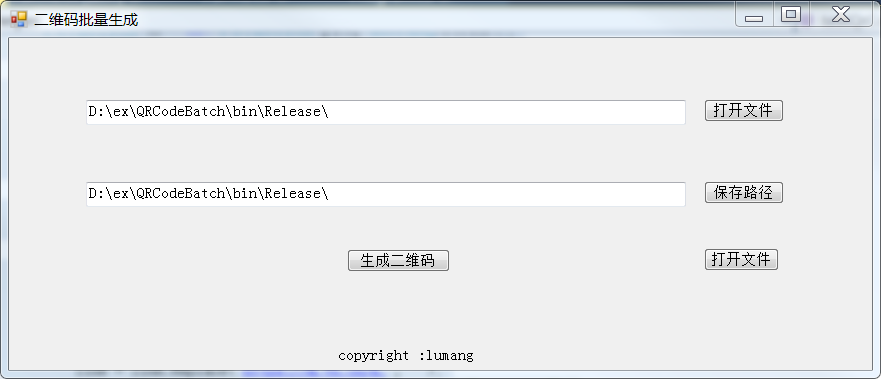

最近需要将大量的字符串生成二维码，
网上找了很多网站和应用都不是很理想，干脆自己做了吧！
github 上找了下找到QrCode 开源项目
安装qrcode非常简单，参考这里
引用 dll
using QrCode核心逻辑
/// <summary>
///
/// </summary>
/// <param name="filename"></param>
/// <param name="savedir"></param>
public void QrCodeBatch(string filename, string savedir)
{
Stopwatch sw = new Stopwatch();
string path = filename;
StreamReader sr = new StreamReader(path, Encoding.Default);
String line;
QRCodeGenerator qrGenerrateor = new QRCodeGenerator();
QRCodeData qRCodeData = null;
QRCode qrcode = null;
Bitmap qrCodeImage = null;
sw.Start();
while ((line = sr.ReadLine()) != null)
{
Console.WriteLine(line.ToString());
line = line.Trim();
qRCodeData = qrGenerrateor.CreateQrCode(line, QRCodeGenerator.ECCLevel.Q);
qrcode = new QRCode(qRCodeData);
qrCodeImage = qrcode.GetGraphic(20);
qrCodeImage.Save(savedir + "\\"+line + ".png");
}
sr.Close();
// 导出数据
Console.WriteLine("use time"+sw.ElapsedMilliseconds / 1000);
}
}功能完成了，如果要给其他人用还需要一个简单的界面

1、将字符串保存为txt文件
2、 选择生成文件保存的文件夹
3、开始生成
4、查看生成的文件
下载使用
百度网盘链接：https://pan.baidu.com/s/1SDiWMAmvqHpfTi7zz3jZtg
提取码：c1oo